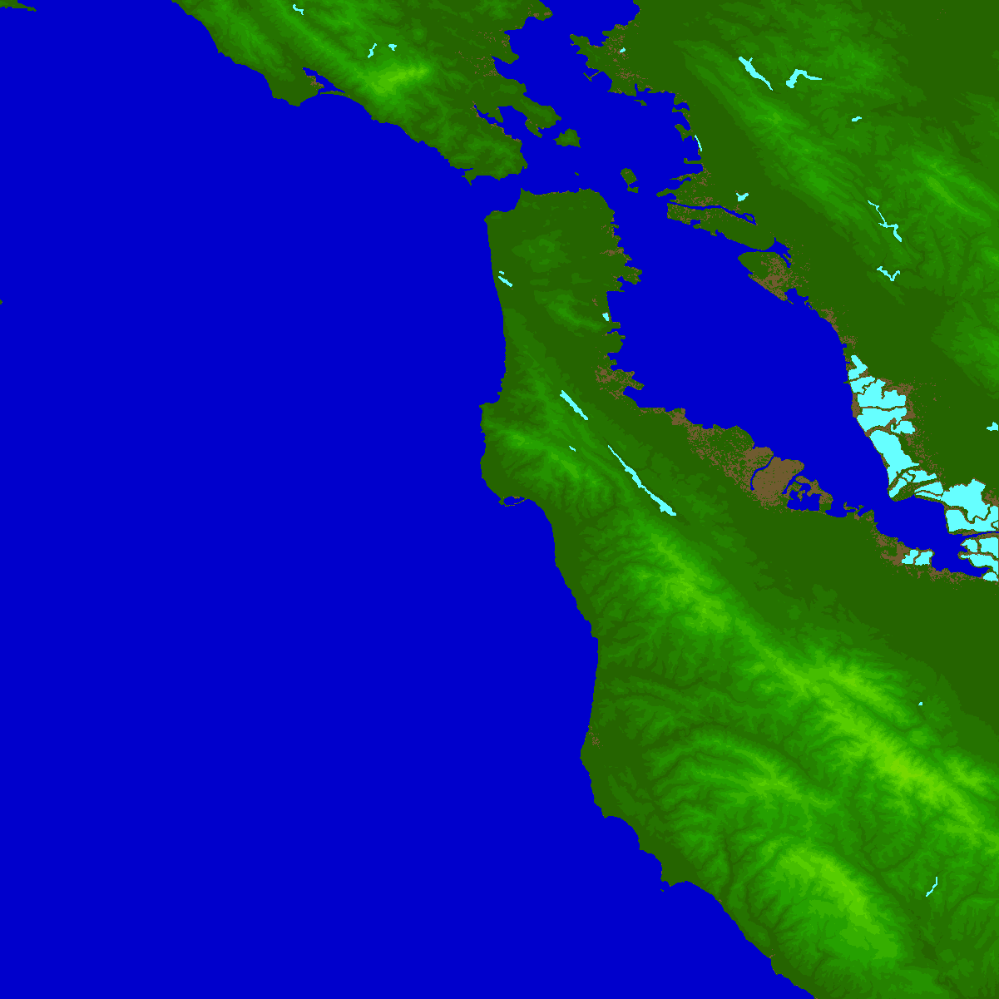
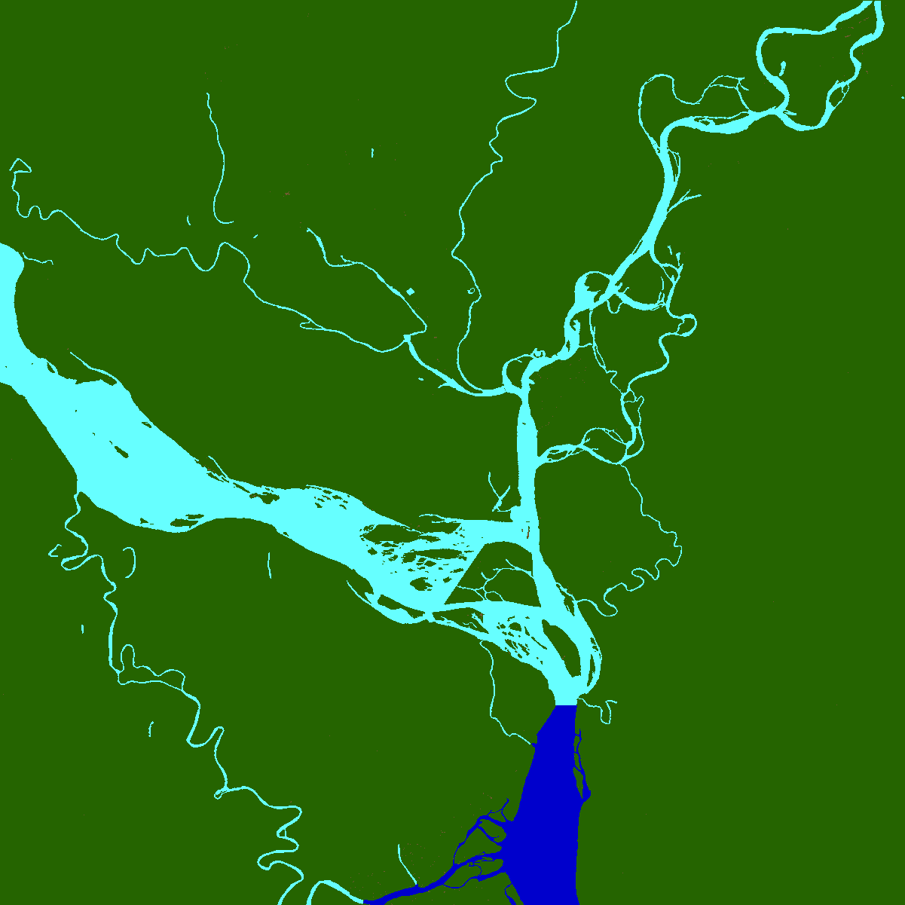
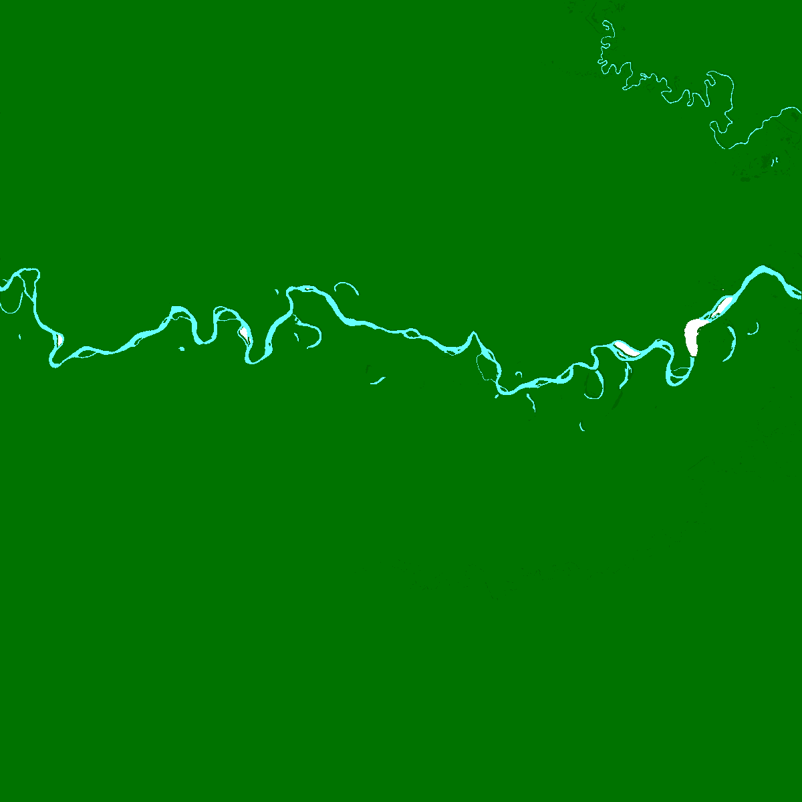
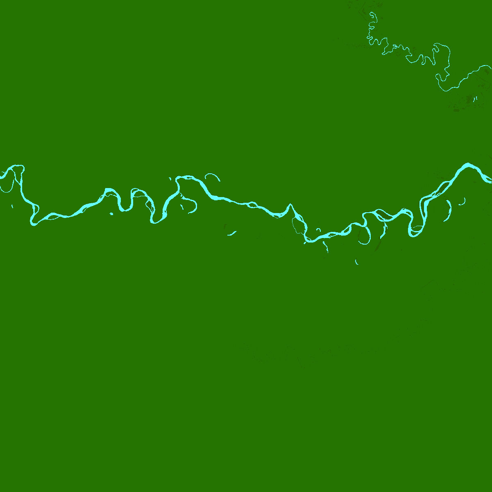

AHM Data Format & AHM Data SetWhat is AHM?AHM stands for two things: an extended geo-data format, and a complete earth geo-data set. AHM the Data FormatAHM is the acronym for Annotated Height Map, an extended data format to the HGT format used by SRTM data and its derivatives. AHM uses four bytes for each pixel; the lower two bytes are the same as the signed 16-bit integer of height value (HGT value), and the higher two bytes are for annotation. Only the lowest three bits are defined; the rest of the bits are open for use. The rest of them are free for use in algorithms or customized AHM data. The pre-defined bits in the two high bytes are as follows:
Byte-0 Byte-1
----------------- ----------------
7 6 5 4 3 2 1 0 7 6 5 4 3 2 1 0
----------------- ----------------
| 0 0 0 no-data
| 0 0 1 land
| 0 1 0 ocean
| 0 1 1 lake
| 1 0 0 river
| 1 0 1 ocean-floor
| 1 1 0 ocean-floor-no-data
| 1 1 1 (reserved)
? ? ? ? ? ? ? ? | ? ? ? ? ? (free use)
------------------ -----------------
AHM the Data SetAHM is also the name of the complete new geo-data encoded in the AHM data format. The data set is not a mere re-encoding of existing data, but has these characteristics:
Greater details are presented in the rest of this document. The result is the AHM Data Set, apparently the most satisfactory one along with SRTM3 and CGIAR-CSI for the -56°–60° latitude range. It contains no voids. The Work of AHM and its ContributionsThe work of AHM evolved from a personal project to use and fix SRTM3/CIGAR-CSIv4 data, and progressed successfully, resulting in a complete new data set. Apply Water BodiesThe first motivation is to apply water body SWBD data to the tiles. This has been calculated for all the land areas of the whole world (so far in SRTM coverage). Here are a few examples (click to see full picture in another window):   Precalculating water bodies has value. Applying water bodies is computationally intense and slow, and it is not as easy as it seems. With this pre-masking in the AHM data set, one can easily extract various types of earth surfaces. As of now, the ocean floor is not mapped. With the availability of ocean floor data, it should be feasible to fill in when the needs arise. Fix Bad DataAs we know, CGIAR-CSI v4 is the de facto SRTM3-data-set-to-use, where the raw SRTM3 data set is practically unusable, despite the fact that the SRTM project is truly a technical marvel. There are still two issues with CGIAR-CSI v4, which may or may not be problems:
Filling small holesThe small holes could be left by the joining of SRTM3 and other data sources (such as ASTER), meaning both data sources have missing data. Filling them is easy and effective, as room for error is very limited. In AHM, small holes are filled with an algorithm that progresses from edge towards center, taking full advantage of the available information in the adjacent pixels. The missing data casesIn the Amazon river range, there are a number of tiles with missing data (left):   By referencing various sources, the missing data are redrawn in place (see the right). The bad data casesThere is one particularly bad data case in the adjacent tiles of S04W073 and S04W074. This also demonstrates the difference between SRTM3 (above) and CGIar-CSI (below): The fix, which can still be improved, looks like this: Summary of data fixingOverall, the CGIAR-CSI data set shows very high quality. Its number of bad or missing data is very low. They pose various challenges, but most of them are fixable to a satisfactory level. As earth data can never be 100% accurate, the AHM Data Set is one of the cleanest available for the -56°–60° latitude range. A Usage ExampleThis is an example of its use. AHM Data Set Donated to the Public DomainTo follow the great examples of STRM, CGIAR and other developers, the AHM Data Set is donated to the public domain in its completeness. Hopefully this data set will be useful for many people and projects. Follow the link to download the AHM Data Set. |